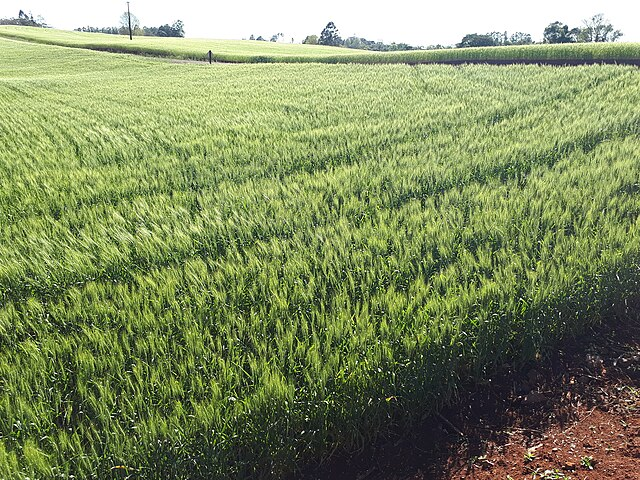

Cultivar com Consciência, Produzir com Respeito
Bem-vindos ao nosso site! Aqui, você vai descobrir como o campo e a natureza podem caminhar juntos por um futuro mais verde. Vamos explorar práticas sustentáveis que respeitam o meio ambiente e fortalecem a vida no campo. 🌎💚
A agricultura é essencial para nossa sobrevivência, mas também é uma das áreas que mais impactam o meio ambiente. A sustentabilidade no campo significa produzir alimentos sem esgotar os recursos naturais, protegendo o solo, a água, o ar e a biodiversidade.
